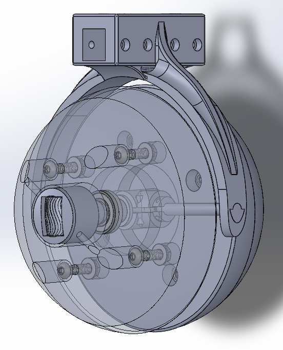
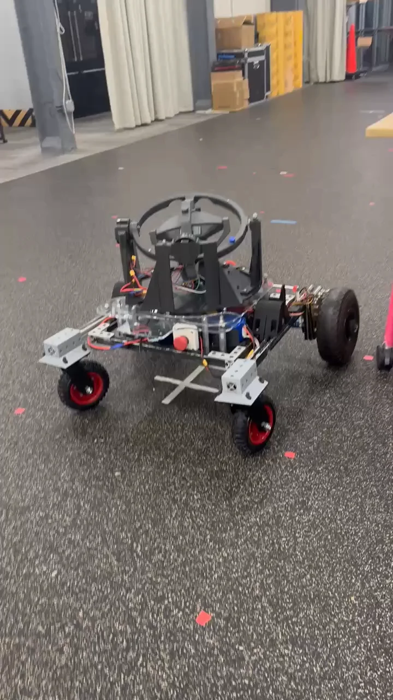
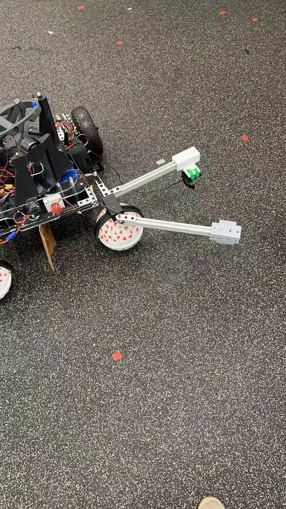
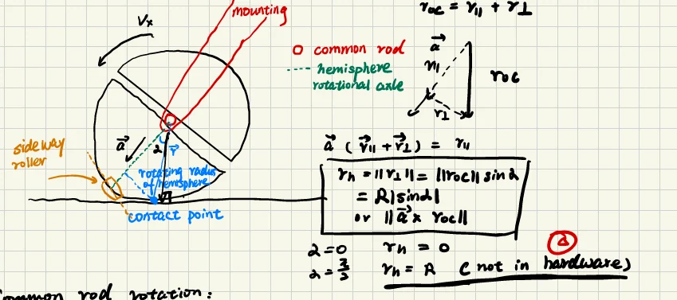

Research · HAMR / CHUTNI
Support-caster behavior on HAMR
How does a passive support caster change the motion a robot actually achieves, especially during reorientation and changes in ground contact?
- Context
- Independent study · University of Pennsylvania
Advisor: Prof. Mark Yim - My role
- Caster integration, motion control, ROS 2 / Vicon, encoder instrumentation, and experimental analysis
- Status
- Ongoing · Fall 2026
Experimental record
Caster motion & robot trajectories
Watch the caster configurations in motion, then inspect a measured path deviation that motivates the current experiments.
Two caster configurations
Separate recordings · original playback speed
Split-spherical caster
Open video ↗
Ordinary caster
Open video ↗
The two clips were recorded separately. They document the hardware configurations; playback is not synchronized.
Why look at local behavior?
The ordinary-caster run shows a clear departure from the reference, but the plot alone does not establish its cause. It motivates testing initial caster orientation, reversal, and contact changes, then relating the caster state to the nearby robot motion rather than only a whole-path error.
How I’m structuring the comparison ↓The problem
The drive wheels receive the commands, but the support casters also determine how the robot moves. A conventional trailing caster has to reorient as the direction changes. A split-spherical caster changes the contact mechanism, but it still has seams, internal rotations, and roller regions that need to be understood.
My independent study investigates these effects on HAMR / CHUTNI. The question is not whether a spherical caster is universally better. It is which behaviors cause a gap between commanded motion and measured motion, and under what conditions.
The mechanism and its instrumentation
These two CAD views show the passive split-spherical caster and the encoder-integrated version I’m building. The added sensing hardware is for measuring the caster’s motion; it is separate from the actively driven caster design.



Current build · Encoder-based measurement
Measuring orientation and angular velocity on the caster
I’m building an encoder-integrated version to publish caster orientation and angular velocity in real time. The goal is a more reliable measurement stream for the experiments, rather than relying only on camera-based tracking.
The encoder build is still in progress. The vision recordings below document the earlier measurement work; they are not results from the new encoder hardware.
My contribution
I integrated the passive split-spherical caster into the robot and iterated its mounting around caster height, chassis clearance, and terrain contact. I also worked on the ROS 2 closed-loop motion-control pipeline, including Vicon feedback, base-frame and yaw alignment, and controller tuning.
For evaluation, I organized logs of reference trajectories, actual pose, tracking errors, and actuator commands. The current focus is to connect these robot-level signals with the internal state of the caster rather than relying only on an overall path error.




Connecting desired motion to actuator commands
The holonomic controller coordinates the two drive wheels and the turret. An outer-loop Cartesian controller produces a desired velocity, and the platform Jacobian maps that velocity to actuator rates. Frame alignment matters: a correct command in the wrong yaw convention still sends the robot in the wrong direction.
The implemented pipeline uses feedback control and the kinematic mapping. The controller work and the passive-caster study are related, but the current study focuses on measuring caster behavior.
HAMR platform tests
These recordings show the integrated platform moving under manual control, before looking closely at the caster-tracking work below. They are qualitative hardware demonstrations, not autonomous trajectory benchmarks or a controlled caster comparison.
Source: HAMR 3.0: Off-Road Holonomy — ModLab Spring Presentation, “Indoor & Outdoor Manual Ctrl Testing.” The original slide-linked recordings are used here; website copies are silent.
Earlier work: vision-based tracking
Surface markers make the shell motion visible to the camera. These earlier recordings document the tracking work used to separate the motion of the assembly from the motion of the individual hemispheres. Encoder instrumentation is the next measurement approach being developed.
Media: original project recordings and HAMR Update, September 2026. Videos are silent.
A local kinematic model
R is the shell radius. α describes rotation of the assembly about the common rod; β describes spin of the contacting hemisphere about its own axis. The effective spin radius is ρ = R |sin α|.
Ideal shell contact, expressed in the caster frame. The sign of β follows the kinematics notes.
The important feature is the sin α term. Assembly rotation and hemisphere spin do not contribute equally in every configuration. Near α = 0, hemisphere spin produces little lateral velocity in this ideal shell-contact model.
For a caster frame with world yaw ψ, the world-frame velocity is vW = Rz(ψ) vC. The orientation of the frame and the internal rolling coordinates are therefore kept separate.


Model assumptions and what this does not describe
The ground is locally flat, the shell is rigid, and the center-to-contact vector is vertical. The velocity relation assumes no slip at the current shell contact. Whole-caster yaw rotates this velocity into the world frame; it is a separate coordinate.
This local model does not reproduce the detailed seam/roller contact geometry, contact switching, friction, motor dynamics, or the transmission in the active CAD. It should not be read as a full hardware simulation.
Comparing the ideal model with measured motion
The notes define contact slip as the residual between measured caster-center velocity and the ideal rolling prediction:
These quantities require measured velocities and angular rates. The equations alone do not establish that slip occurred.
In practice, calibration, frame transformations, and timing errors must be checked before interpreting a residual as physical slip.
Equations: Kinematics of the Passive Split Spherical Caster, §§1–5 and §8. The linked excerpt contains §§1–6 only.
The experiments I’m building
The test plan conditions each maneuver on the initial caster state. This is intended to reveal short events that can disappear inside an aggregate trajectory metric.
| Maneuver | Behavior to examine |
|---|---|
| Forward motion and reversal | Alignment delay and the transient after a direction change. |
| Lateral or combined motion | Internal shell rotation, scrubbing, and changes in effective rolling radius. |
| In-place rotation | Orientation-dependent caster motion and chassis disturbance. |
| Different initial caster states | Whether a repeatable command produces a different local response. |
| Selected uneven-terrain trials | Contact changes, clearance, and sensitivity to terrain. |
Candidate measurements include path deviation, final position error, lateral drift, visible contact transitions, caster orientation, and chassis disturbance. The final comparison will use the subset that can be measured repeatably with the available hardware.
Experimental scope: MEAM 5990 Independent Study Proposal, Fall 2026. These are the study’s candidate tests, not a claim that the entire test matrix has been completed.
Current direction
The immediate work is to complete the encoder-integrated caster and bring its orientation and angular-velocity measurements into the experimental workflow. These measurements are intended to connect internal caster motion with the robot’s trajectory and control logs during repeatable tests.
In parallel, I’m developing an active spherical caster. It is a separate mechanism-design direction; active driving is not part of the formal passive-caster independent-study scope.